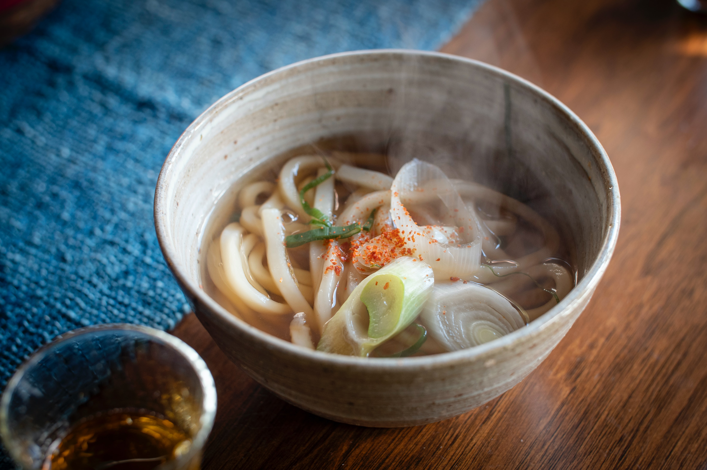
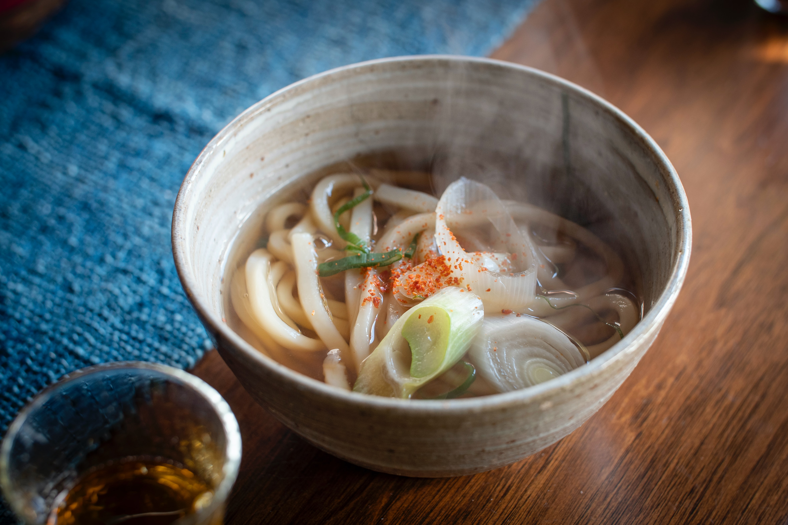
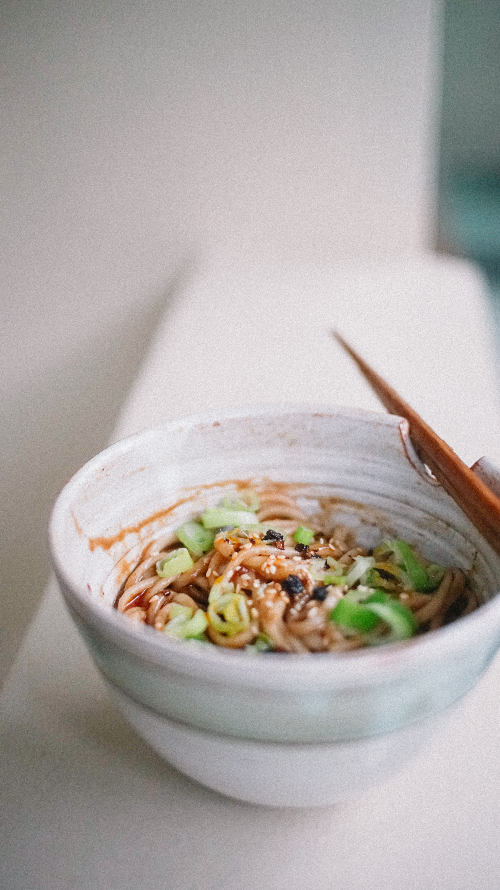
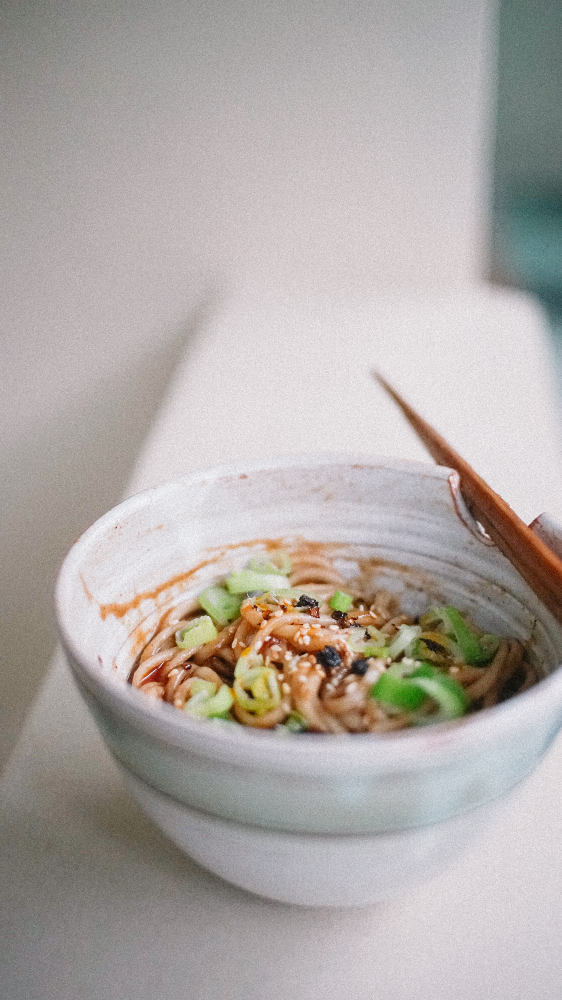

Le Japon est célèbre pour sa cuisine délicieuse et raffinée, qui allie des saveurs uniques à une présentation artistique. Voici quelques-unes des spécialités culinaires du pays:
Le sushi est sans aucun doute l'un des plats les plus célèbres du Japon. Il s'agit de riz vinaigré garni de poisson cru ou cuit, d'algues, de légumes ou d'œufs. Le sushi est souvent servi dans des restaurants spécialisés, mais on peut également en trouver dans les supermarchés et les stands de nourriture de rue.
Les nouilles ramen sont un autre plat japonais populaire. Les nouilles sont servies dans un bouillon chaud et aromatique, accompagnées de viande, de légumes et d'œufs durs. Il existe de nombreuses variations régionales de ce plat, chacune avec sa propre saveur et sa propre présentation.
Le tempura est une spécialité japonaise consistant en des aliments frits dans une pâte légère et croustillante. Les ingrédients courants sont les crevettes,les légumes et les fruits de mer, mais on peut aussi trouver du tempura de viande et d'autres ingrédients. Le tempura est souvent servi avec une sauce de trempage légèrement sucrée.
L'okonomiyaki est souvent décrit comme une "pizza japonaise". C'est une crêpe épaisse à base de chou et de pâte, garnie de viande, de fruits de mer, de légumes et d'autres ingrédients. La crêpe est ensuite grillée et garnie de mayonnaise, de sauce Worcestershire, de bonite séchée et de poudre d'algues
Les nouilles udon sont plus épaisses et plus moelleuses que les nouilles ramen. Elles sont souvent servies dans un bouillon chaud avec de la viande, des légumes et des algues. Les nouilles udon sont également utilisées dans d'autres plats, comme le zaru udon (nouilles froides servies avec une sauce de trempage) et le yaki udon (nouilles frites avec des légumes et de la viande).
Ces plats ne sont que quelques exemples de la délicieuse cuisine japonaise. Que vous soyez un amateur de sushis ou un fan de nouilles, il y a quelque chose pour tout le monde dans la cuisine japonaise.
 

 
